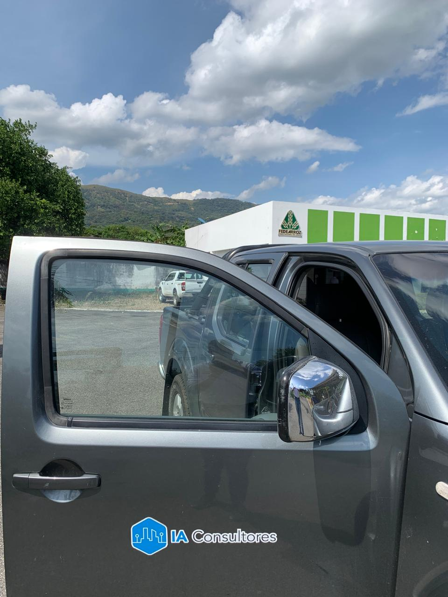
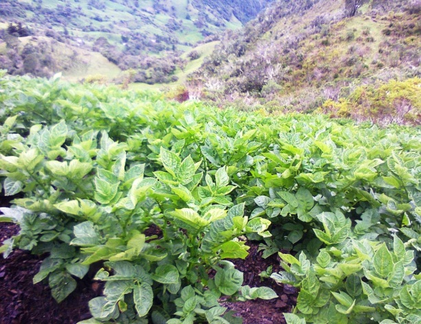
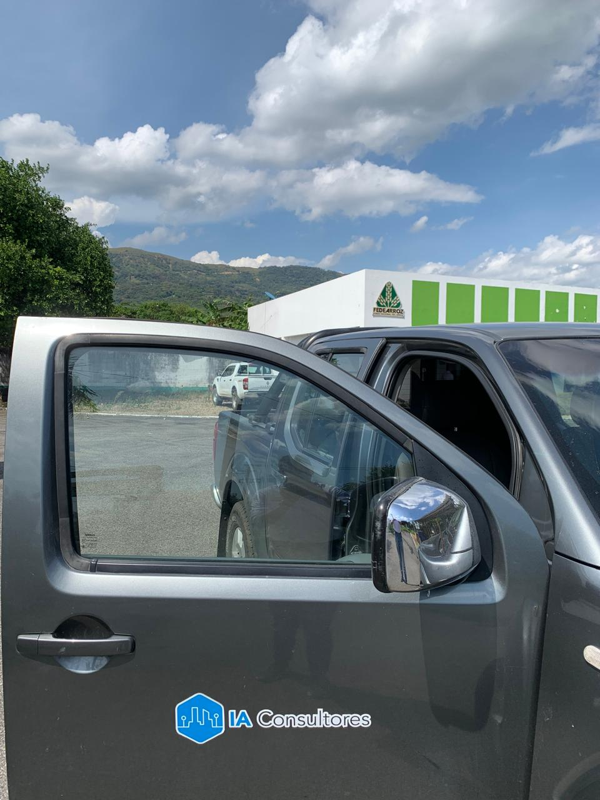
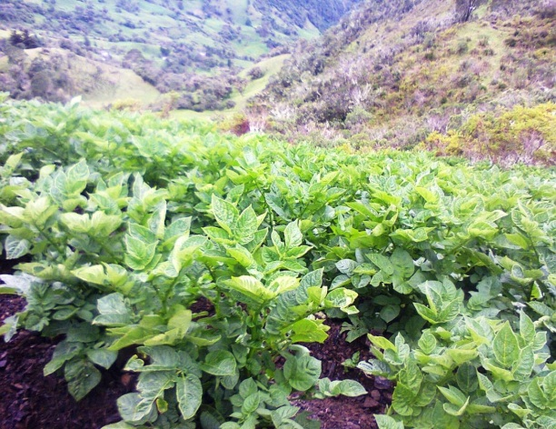
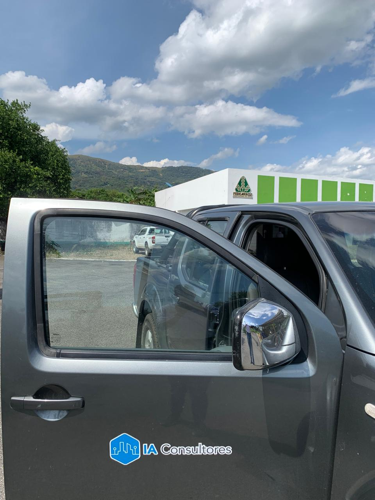
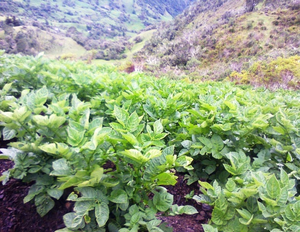
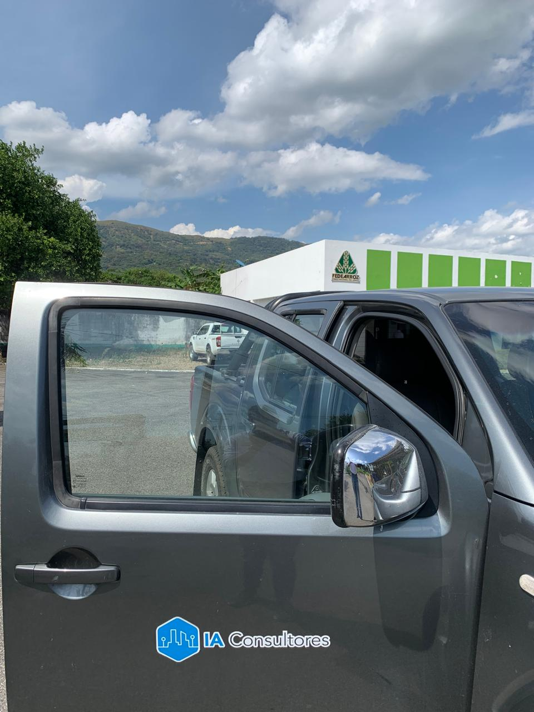
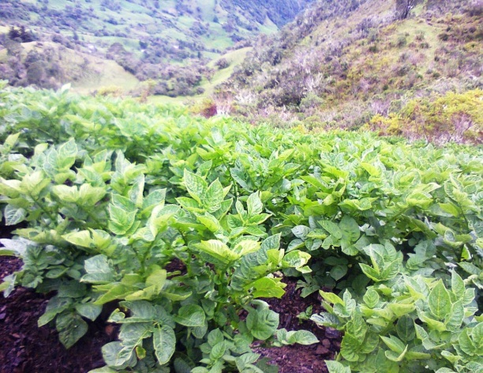

 



INGENIERIA Y AGROCIENCIAS CONSULTORES es una empresa creada en el 2008, que surgió gracias a la iniciativa de 4 profesionales del sector agropecuario y ambiental por generar empresa y ayudar a las comunidades rurales a mejorar sus condiciones de producción, cosecha y comercialización de sus productos. Durante estos años, IA CONSULTORES ha desarrollado un gran número actividades con entidades públicas y privadas, siempre en busca de impactar positivamente a las comunidades de su entorno.

Somos una empresa de consultoría, conformada por profesionales idóneos, con formación profesional, dedicada a la prestación de servicios ambientales, agropecuarios e industriales, al suministro y comercialización de toda clase de insumos y productos del sector agroindustrial, comprometidos con la sostenibilidad ambiental
Ser en el 2025 la empresa de consultoría, suministros y prestación de servicios agropecuarios y ambientales preferida, altamente competitiva, confiable, sustentable, con el mejor crecimiento y ofreciendo productos y servicios vitales que se adaptan a las necesidades para el progreso de las comunidades, con los mayores estándares de calidad a nivel regional y nacional.
Brindar productos y servicios de consultoría ambiental y agropecuaria al sector público y privado, con proyección a nivel nacional, destacándose por ofrecer servicios de alta calidad, bajo los principios de conservación, administración y manejo sostenible de los recursos naturales.
IA CONSULTORES SAS Somos una empresa privada con 12 años de experiencia en el diseño, gestión, ejecución, control y evaluación de proyectos agropecuarios y ambientales a nivel departamental. Nos destacamos por nuestro gran sentido de pertenencia y responsabilidad, asegurando el cumplimiento de los objetivos y metas establecidas. Entre las actividades que realizamos se encuentran:
Prestación del servicio de Asistencia Técnica Directa Rural (ATDR) y Extensión Agropecuaria en distintos municipios de Boyacá (Busbanzá, Chiscas, Chitaraque, Corrales, Iza, Motavita, Nobsa, Saboyá, San Eduardo, San Mateo, Socha, Sogamoso, Sora, Tibasosa, Togüí), los cuales surgen como iniciativas de los propios municipios para brindarles la asistencia y el acompañamiento a sus comunidades en las líneas de Desarrollo Rural Sostenible mediante la estructuración y operación integral de proyectos. (2008 - 2017).

Suministro de medicamentos veterinarios, insumos agropecuarios, bebederos, maquinaria, animales, plantas, árboles frutales, etc., a diversos municipios y entidades del departamento, como asociaciones y entidades privadas.
Ejecución del Incentivo Económico a la Asistencia Técnica Directa Rural (IEATDR) 2015, convenio 20150490, (Municipios de Chiscas, Motavita, San Eduardo, San Mateo, Sora y Viracachá).
Cercado y delimitación de predios.
Servicio profesional especializado para la formulación y consolidación de diagnóstico de elementos locales y regionales estructurales de los procesos de productividad agrícola, pecuaria y forestal que se constituyen en determinantes del territorio municipal dentro del marco de revisión y ajuste general del esquema de ordenamiento territorial del Municipio de Tibasosa - Boyacá.
Desde su creación en 2008 IA CONSULTORES ha ejecutado 79 proyectos así:
Entidades del estado
$5.473.172.686
(9.014,99 SMLMV)
Entidades privadas
$2.489.394.206
(4.187,4 SMLMV)
$7.962.566.892
(13.202,79 SMLMV)
Número de Clientes:
20 Alcaldías de Boyacá,
8 entidades privadas
(Asociaciones, Fundaciones, empresas)